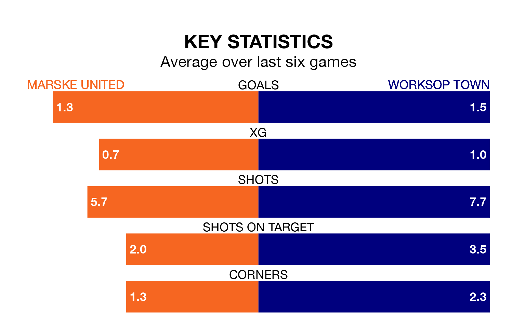

Mid-season relegation candidates Marske United face a challenge against high-flying Worksop Town at the GER Stadium on Tuesday.
Marske United are 19th in the Northern Premier League table, and have picked up seven wins and no draws in their 22 games to date.
Worksop, meanwhile, are third in the standings with 44 points, having won 13 and drawn five of their first 24 matches, and are seven points behind table-toppers Radcliffe Borough.
With 52 goals in 24 games so far this season, Worksop are the league's joint-second-highest scorers with 2.2 goals per game. And they are conceding fewer than average, letting in 26 goals at a rate of 1.1 per game.
Marske, meanwhile, are below average scorers, with 1.4 goals per game, compared to a league average of 1.6. They have conceded 2.4 goals per game.
United are in mixed form in Northern Premier League, with three wins and three losses from their last six games.
With three wins and two draws over that period, Town's form is slightly better – they have taken 11 points from 18, compared to the hosts' nine.
Marske's last match was on December 30, a 2-0 loss against Morpeth Town.
Worksop beat Whitby Town 1-0 last time out, on Saturday.
Updated: 11:31, 09/01/24